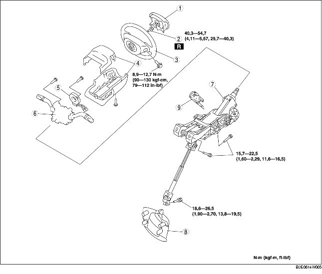

1. Déposer les différents éléments selon l'ordre indiqué dans le tableau.
2. Pour la repose, suivre l'ordre inverse de la dépose.

.
|
1
|
Module d'airbag
(voir la section DEPOSE/REPOSE DE MODULE D'AIRBAG COTE CONDUCTEUR.)
|
|
2
|
Ergot d'arrêt
|
|
3
|
Volant de direction
(voir la section Note sur la dépose du volant de direction.)
(voir la section Note sur la repose du volant de direction.)
|
|
4
|
Cache de colonne
|
|
5
|
Ressort hélicoïdal
(voir la section DEPOSE/REPOSE DE RESSORT HELICOIDAL.)
|
|
6
|
Contacteur de combinaison
|
|
7
|
Arbre de direction
(voir la section Note sur la repose de l'arbre de direction.)
|
|
8
|
Cache-poussière
|
|
9
|
Cylindre de clé
(voir la section Note sur la dépose de cylindre de clé.)
|
1. Régler les roues en position droite.
2. Déposer le volant de direction à l'aide de l'outil d'extraction commun.
1. Positionner la clé sur ACC.
2. Pousser la goupille et déposer le cylindre de clé.
1. Vérifier que le levier d'inclinaison est sur la position VERROUILLAGE.
2. Serrer les boulons dans l'ordre alphabétique.
1. Orienter les roues droit vers l'avant, puis reposer le volant de direction.